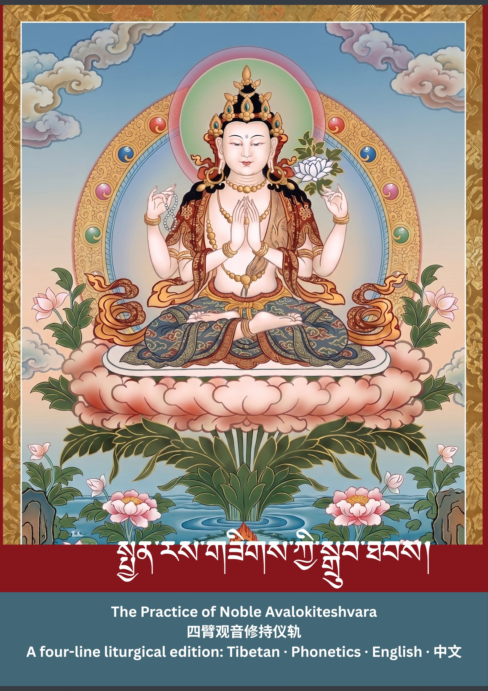
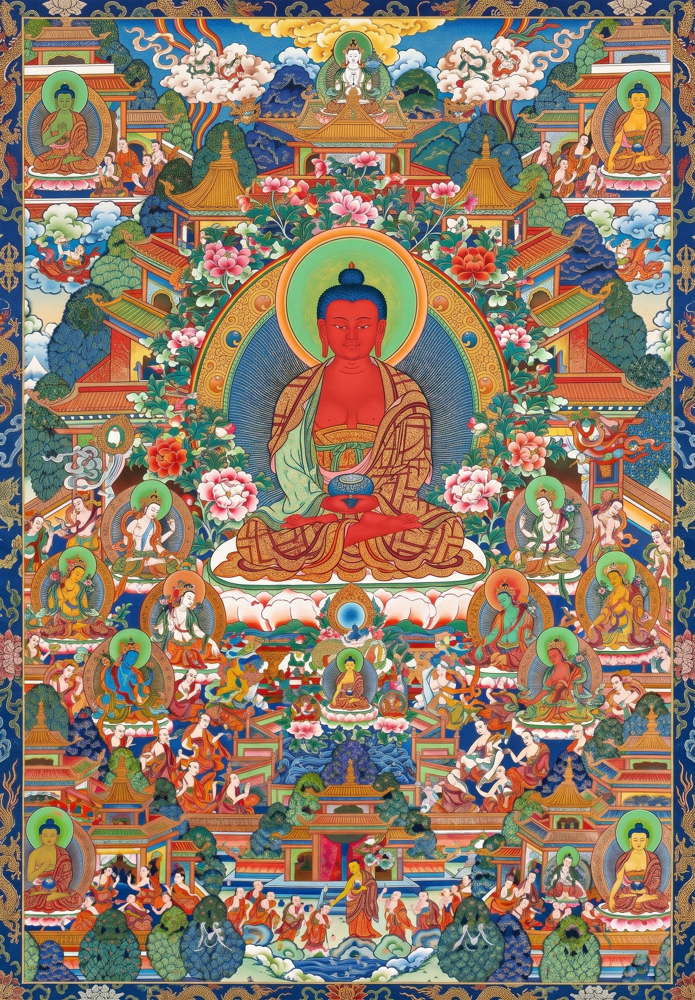

སྤྱན་རས་གཟིགས་ཀྱི་སྒྲུབ་ཐབས།
The Practice of Noble Avalokiteśvara
Chenrezig Sadhana · A Four-Line Edition
四臂观音修持仪轨
❀
Edited & Finalized by
Khenpo Kunga Rinchen
མཁན་པོ་ཀུན་དགའ་རིན་ཆེན་གྱིས་རྩོམ་སྒྲིག་དང་ཞུས་ཆེན་བགྱིས།
贡噶·仁钦堪布 编校
This four-line liturgical edition — presenting the Tibetan root text,
phonetic guide, English translation, and Chinese Buddhist rendering —
was compiled, edited, and finalized under the care of Khenpo Kunga Rinchen.
phonetic guide, English translation, and Chinese Buddhist rendering —
was compiled, edited, and finalized under the care of Khenpo Kunga Rinchen.
༄༅
I · དང་པོ
Refuge and Bodhicitta
སྐྱབས་འགྲོ་སེམས་བསྐྱེད།
皈依 · 发心
སངས་རྒྱས་ཆོས་དང་ཚོགས་ཀྱི་མཆོག་རྣམས་ལ།།
Sang-gye chö-dang tsog-kyi chog-nam-la
In the Buddha, the Dharma, and the Supreme Assembly,
诸佛正法贤圣三宝尊，
བྱང་ཆུབ་བར་དུ་བདག་ནི་སྐྱབས་སུ་མཆི།།
Jang-chub bar-du dag-ni kyab-su-chi
Until enlightenment I take refuge.
从今直至菩提我皈依。
བདག་གིས་བསྒོམ་བཟླས་བགྱིས་པའི་བསོད་ནམས་ཀྱིས།།
Dag-gi gom-dé gyi-pé sö-nam-kyi
Through the merit of my meditation and recitation,
以我修持念诵诸功德，
འགྲོ་ལ་ཕན་ཕྱིར་སངས་རྒྱས་འགྲུབ་པར་ཤོག།
Dro-la phen-chir sang-gye drub-par-shog
May I attain Buddhahood for the benefit of beings.
为利众生愿成就佛果。
Recite three times
❀
II · གཉིས་པ
The Four Immeasurables
ཚད་མེད་བཞི།
四无量心
1 · Loving-Kindness · བྱམས་པ · 慈无量
སེམས་ཅན་ཐམས་ཅད་བདེ་བ་དང་
Sem-chen tham-ché dé-wa-dang
May all sentient beings have happiness
愿诸众生具足安乐，
བདེ་བའི་རྒྱུ་དང་ལྡན་པར་གྱུར་ཅིག།
Dé-wé gyu-dang den-par-gyur-chig
And the causes of happiness.
以及安乐之因。
2 · Compassion · སྙིང་རྗེ · 悲无量
སེམས་ཅན་ཐམས་ཅད་སྡུག་བསྔལ་དང་
Sem-chen tham-ché dug-ngal-dang
May all sentient beings be free from suffering
愿诸众生远离众苦，
སྡུག་བསྔལ་གྱི་རྒྱུ་དང་བྲལ་བར་གྱུར་ཅིག།
Dug-ngal-gyi gyu-dang dral-war-gyur-chig
And the causes of suffering.
以及众苦之因。
3 · Sympathetic Joy · དགའ་བ · 喜无量
སེམས་ཅན་ཐམས་ཅད་སྡུག་བསྔལ་མེད་པའི་བདེ་བ་དང་
Sem-chen tham-ché dug-ngal mé-pé dé-wa-dang
May all sentient beings never be parted
愿诸众生永不离失，
མི་བྲལ་བར་གྱུར་ཅིག།
Mi-dral-war-gyur-chig
From the bliss that is free of suffering.
无苦之妙乐。
4 · Equanimity · བཏང་སྙོམས · 舍无量
སེམས་ཅན་ཐམས་ཅད་ཉེ་རིང་ཆགས་སྡང་དང་བྲལ་བའི་
Sem-chen tham-ché nyé-ring chag-dang-dang dral-wé
May all sentient beings, free from attachment to the near and aversion to the far,
愿诸众生远离亲疏爱憎，
བཏང་སྙོམས་ལ་གནས་པར་གྱུར་ཅིག།
Tang-nyom-la né-par-gyur-chig
Abide in great equanimity.
安住于大平等舍。
Recite three times, contemplating each of the four in turn
༄༅
III · གསུམ་པ
Deity Visualization
ལྷ་བསྐྱེད་ནི།
观想本尊

Thangka of Four-Armed Avalokiteśvara
Replace with your own:
Replace with your own:
images/chenrezig.jpg
Four-Armed Avalokiteśvara · སྤྱན་རས་གཟིགས་ཕྱག་བཞི་པ། · 四臂观自在菩萨
བདག་སོགས་མཁའ་ཁྱབ་སེམས་ཅན་གྱི།།
Dag-sog kha-khyab sem-chen-gyi
Above the crowns of myself and all beings pervading space,
于我及遍虚空一切众生，
སྤྱི་གཙུག་པད་དཀར་ཟླ་བའི་སྟེང་།།
Chi-tsug pé-kar da-wé-teng
Upon the crown, on a white lotus and moon disc,
顶上白莲月轮宝座之上，
ཧྲཱིཿལས་འཕགས་མཆོག་སྤྱན་རས་གཟིགས།།
Hrih-lé phag-chog chen-ré-zig
From the syllable HRĪḤ arises the Noble Supreme Avalokiteśvara.
由舍字现圣者观自在尊。
དཀར་གསལ་འོད་ཟེར་ལྔ་ལྡན་འཕྲོ།།
Kar-sal ö-zer nga-den-tro
Radiant white, he emanates rays of five-colored light.
洁白晶莹放射五色光明。
འཛུམ་ལྡན་ཐུགས་རྗེའི་སྤྱན་གྱིས་གཟིགས།།
Dzum-den thug-jé chen-gyi-zig
Smiling, he gazes upon us with eyes of compassion.
慈颜含笑悲眼慈视众生，
ཕྱག་བཞིའི་དང་པོ་ཐལ་སྦྱར་མཛད།།
Chag-zhi dang-po thal-jar-dzé
Of his four arms, the first two are joined in prayer at the heart;
四臂之中前二合掌于胸，
འོག་གཉིས་ཤེལ་ཕྲེང་པད་དཀར་བསྣམས།།
Og-nyi shel-treng pé-kar-nam
The lower two hold a crystal rosary and a white lotus.
下方二手持水晶鬘白莲。
དར་དང་རིན་ཆེན་རྒྱན་གྱིས་སྤྲས།།
Dar-dang rin-chen gyen-gyi-tré
He is adorned with silks and precious jewel ornaments,
绫罗珍宝妙饰以为庄严，
རི་དྭགས་ལྤགས་པའི་སྟོད་གཡོག་གསོལ།།
Ri-dag pag-pé tö-yog-sol
And wears an upper garment of antelope skin.
身披鹿皮为其上身衣裳。
འོད་དཔག་མེད་པའི་དབུ་རྒྱན་ཅན།།
Ö-pag-mé-pé u-gyen-chen
Amitābha, Buddha of Infinite Light, graces his crown.
顶戴无量光佛以为严饰，
ཞབས་གཉིས་རྡོ་རྗེ་སྐྱིལ་ཀྲུང་བཞུགས།།
Zhab-nyi dor-jé kyil-trung-zhug
His two legs are settled in the vajra posture,
双足安住金刚跏趺而坐。
དྲི་མེད་ཟླ་བར་རྒྱབ་བསྟེན་པ།།
Dri-mé da-war gyab-ten-pa
His back rests against a stainless moon.
背倚清净无垢皎洁之月，
སྐྱབས་གནས་ཀུན་འདུས་ངོ་བོར་གྱུར།།
Kyab-né kün-dü ngo-wor-gyur
He is the very essence of all sources of refuge gathered into one.
即是一切皈依之总集体。
❀
IV · བཞི་པ
The Seven-Branch Prayer
ཡན་ལག་བདུན་པའི་སྨོན་ལམ།
七支供养文
འཕགས་པ་སྤྱན་རས་གཟིགས་དབང་དང་།།
Phag-pa chen-ré-zig-wang-dang
To the Noble Lord Avalokiteśvara,
顶礼圣者观自在王尊，
ཕྱོགས་བཅུ་དུས་གསུམ་བཞུགས་པ་ཡི།།
Chog-chu dü-sum zhug-pa-yi
And to all who dwell in the ten directions and three times —
与住十方三时一切之，
རྒྱལ་བ་སྲས་བཅས་ཐམས་ཅད་ལ།།
Gyal-wa sé-ché tham-ché-la
To all the Victorious Ones together with their Sons,
诸佛世尊及诸佛子众，
ཀུན་ནས་དང་བས་ཕྱག་འཚལ་ལོ།།
Kün-né dang-wé chag-tsal-lo
With wholehearted devotion, I prostrate.
至诚恭敬虔心而顶礼。
མེ་ཏོག་བདུག་སྤོས་མར་མེ་དྲི།།
Mé-tog dug-pö mar-mé-dri
Flowers, incense, lamps, and perfumes,
鲜花熏香明灯与涂香，
ཞལ་ཟས་རོལ་མོ་ལ་སོགས་པ།།
Zhal-zé röl-mo la-sog-pa
Food, music, and offerings of every kind,
饮食音乐等等诸供云，
དངོས་འབྱོར་ཡིད་ཀྱིས་སྤྲུལ་ནས་འབུལ།།
Ngö-jor yi-kyi trül-né-bül
Both actually arrayed and mentally emanated, I present.
实设以及意化诸供品，
འཕགས་པའི་ཚོགས་ཀྱིས་བཞེས་སུ་གསོལ།།
Phag-pé tsog-kyi zhé-su-sol
O Assembly of Noble Ones, I pray you accept them.
祈请圣众慈悲哀纳受。
ཐོག་མ་མེད་ནས་ད་ལྟའི་བར།།
Thog-ma-mé-né da-té-bar
From time without beginning until now,
从无始时以来迄于今，
མི་དགེ་བཅུ་དང་མཚམས་མེད་ལྔ།།
Mi-gé chu-dang tsam-mé-nga
The ten non-virtues and the five inexpiable deeds —
十不善业以及五无间，
སེམས་ནི་ཉོན་མོངས་དབང་གྱུར་པའི།།
Sem-ni nyön-mong wang-gyur-pé
All misdeeds committed while the mind was under the sway of afflictions,
一切心为烦恼所支配，
སྡིག་པ་ཐམས་ཅད་བཤགས་པར་བགྱི།།
Dig-pa tham-ché shag-par-gyi
Each and every one I confess.
所造诸罪悉皆发露忏。
ཉན་ཐོས་རང་རྒྱལ་བྱང་ཆུབ་སེམས།།
Nyen-thö rang-gyal jang-chub-sem
Of Śrāvakas, Pratyekabuddhas, Bodhisattvas,
声闻缘觉以及诸菩萨，
སོ་སོ་སྐྱེ་བོ་ལ་སོགས་པས།།
So-so kyé-wo la-sog-pé
Ordinary beings, and all others,
乃至凡夫众生等一切，
དུས་གསུམ་དགེ་བ་ཅི་བསགས་པའི།།
Dü-sum gé-wa chi-sag-pé
Whatever virtue has been gathered in the three times —
三世所积一切诸善根，
བསོད་ནམས་ལ་ནི་བདག་ཡི་རང་།།
Sö-nam-la-ni dag-yi-rang
In all such merit I rejoice.
所有功德我皆随喜之。
སེམས་ཅན་རྣམས་ཀྱི་བསམ་པ་དང་།།
Sem-chen nam-kyi sam-pa-dang
In accordance with the various dispositions
随顺众生种种之根机，
བློ་ཡི་བྱེ་བྲག་ཇི་ལྟར་བར།།
Lo-yi jé-drag ji-tar-war
And capacities of sentient beings' minds —
以及各别意乐之差别，
ཆེ་ཆུང་ཐུན་མོང་ཐེག་པ་ཡི།།
Ché-chung tün-mong theg-pa-yi
Through the greater, lesser, and common vehicles,
大小乘以及共同诸乘，
ཆོས་ཀྱི་འཁོར་ལོ་བསྐོར་དུ་གསོལ།།
Chö-kyi khor-lo kor-du-sol
I beseech you: turn the Wheel of Dharma.
祈请转动无上妙法轮。
འཁོར་བ་ཇི་སྲིད་མ་སྟོངས་བར།།
Khor-wa ji-si ma-tong-war
Until saṃsāra is utterly emptied,
乃至轮回未空之间，
མྱ་ངན་མི་འདའ་ཐུགས་རྗེ་ཡིས།།
Nya-ngen mi-da thug-jé-yi
Out of your compassion, do not pass into nirvāṇa.
祈以悲心莫入般涅槃。
སྡུག་བསྔལ་རྒྱ་མཚོར་བྱིང་བ་ཡི།།
Dug-ngal gya-tsor jing-wa-yi
Upon all beings drowning in the ocean of suffering,
沉溺无边苦海之众生，
སེམས་ཅན་རྣམས་ལ་གཟིགས་སུ་གསོལ།།
Sem-chen nam-la zig-su-sol
I pray that you gaze down with compassionate eyes.
祈请大悲慈悯而观照。
བདག་གིས་བསོད་ནམས་ཅི་བསགས་པ།།
Dag-gi sö-nam chi-sag-pa
Whatever merit I have gathered,
以我所积一切诸功德，
ཐམས་ཅད་བྱང་ཆུབ་རྒྱུར་གྱུར་ནས།།
Tham-ché jang-chub gyur-gyur-né
May it all become a cause of enlightenment.
悉皆成就无上菩提因。
རིང་པོར་མི་ཐོགས་འགྲོ་བ་ཡི།།
Ring-por mi-thog dro-wa-yi
Without long delay, may I become
愿我不久之间即成为，
འདྲེན་པའི་དཔལ་དུ་བདག་གྱུར་ཅིག།
Dren-pé pal-du dag-gyur-chig
The glorious Guide of all beings.
一切众生引导之光荣。
༄༅
V · ལྔ་པ
Prayer to the Six Realms
རིགས་དྲུག་གི་སྨོན་ལམ།
六道普救祈请文
གསོལ་བ་འདེབས་སོ་བླ་མ་སྤྱན་རས་གཟིགས།།
Sol-wa deb-so la-ma chen-ré-zig
I supplicate you, Guru Chenrezig.
祈请上师观世音。
གསོལ་བ་འདེབས་སོ་ཡི་དམ་སྤྱན་རས་གཟིགས།།
Sol-wa deb-so yi-dam chen-ré-zig
I supplicate you, Yidam Chenrezig.
祈请本尊观世音。
གསོལ་བ་འདེབས་སོ་འཕགས་མཆོག་སྤྱན་རས་གཟིགས།།
Sol-wa deb-so phag-chog chen-ré-zig
I supplicate you, Noble Supreme Chenrezig.
祈请圣尊观世音。
གསོལ་བ་འདེབས་སོ་སྐྱབས་མགོན་སྤྱན་རས་གཟིགས།།
Sol-wa deb-so kyab-gön chen-ré-zig
I supplicate you, Refuge-Protector Chenrezig.
祈请怙主观世音。
གསོལ་བ་འདེབས་སོ་བྱམས་མགོན་སྤྱན་རས་གཟིགས།།
Sol-wa deb-so jam-gön chen-ré-zig
I supplicate you, Loving Protector Chenrezig.
祈请慈尊观世音。
ཐུགས་རྗེས་ཟུངས་ཤིག་རྒྱལ་བ་ཐུགས་རྗེ་ཅན།།
Thug-jé zung-shig gyal-wa thug-jé-chen
Hold me with your compassion, O Compassionate Victor!
大悲摄受具悲胜者尊。
The Gods Realm Pride · ང་རྒྱལ
ང་རྒྱལ་ལས་ཀྱི་འབྲས་བུ་ཡིས།།
Nga-gyal lé-kyi dré-bu-yi
Through the fruit of the karma of pride,
由以我慢业之果报故，
སེམས་ཅན་ལྷ་རུ་སྐྱེས་གྱུར་ཏེ།།
Sem-chen lha-ru kyé-gyur-té
Beings are born as gods,
众生得生于天道之中，
འཕོ་ལྟུང་སྡུག་བསྔལ་མྱོང་བའི་འགྲོ།།
Pho-tung dug-ngal nyong-wé-dro
Wanderers who suffer the falling from high estate —
受彼死堕众苦诸有情，
པོ་ཏ་ལ་ཡི་ཞིང་དུ་སྐྱེ་བར་ཤོག།
Po-ta-la-yi zhing-du kyé-war-shog
May they be born in the pure realm of Potala.
愿生怙主普陀拉净土。
The Demigod Realm Jealousy · ཕྲག་དོག
ཕྲག་དོག་ལས་ཀྱི་འབྲས་བུ་ཡིས།།
Trag-dog lé-kyi dré-bu-yi
Through the fruit of the karma of jealousy,
由以嫉妒业之果报故，
སེམས་ཅན་ལྷ་མིན་སྐྱེས་གྱུར་ཏེ།།
Sem-chen lha-min kyé-gyur-té
Beings are born as demigods,
众生得生于非天之中，
འཐབ་རྩོད་སྡུག་བསྔལ་མྱོང་བའི་འགྲོ།།
Thab-tsö dug-ngal nyong-wé-dro
Wanderers who suffer ceaseless strife —
受彼斗争众苦诸有情，
པོ་ཏ་ལ་ཡི་ཞིང་དུ་སྐྱེ་བར་ཤོག།
Po-ta-la-yi zhing-du kyé-war-shog
May they be born in the pure realm of Potala.
愿生怙主普陀拉净土。
The Human Realm Desire · འདོད་ཆགས
འདོད་ཆགས་ལས་ཀྱི་འབྲས་བུ་ཡིས།།
Dö-chag lé-kyi dré-bu-yi
Through the fruit of the karma of desire,
由以贪欲业之果报故，
སེམས་ཅན་མི་རུ་སྐྱེས་གྱུར་ཏེ།།
Sem-chen mi-ru kyé-gyur-té
Beings are born as humans,
众生得生于人道之中，
འདུ་འཛི་སྡུག་བསྔལ་མྱོང་བའི་འགྲོ།།
Du-dzi dug-ngal nyong-wé-dro
Wanderers who suffer constant toil and bustle —
受彼营碌众苦诸有情，
བདེ་བ་ཅན་གྱི་ཞིང་དུ་སྐྱེ་བར་ཤོག།
Dé-wa-chen-gyi zhing-du kyé-war-shog
May they be born in the pure realm of Dewachen.
愿生极乐世界之净土。
The Animal Realm Ignorance · གཏི་མུག
གཏི་མུག་ལས་ཀྱི་འབྲས་བུ་ཡིས།།
Ti-mug lé-kyi dré-bu-yi
Through the fruit of the karma of ignorance,
由以愚痴业之果报故，
སེམས་ཅན་བྱོལ་སོང་སྐྱེས་གྱུར་ཏེ།།
Sem-chen jol-song kyé-gyur-té
Beings are born as animals,
众生得生于畜生之中，
གླེན་ལྐུགས་སྡུག་བསྔལ་མྱོང་བའི་འགྲོ།།
Len-kug dug-ngal nyong-wé-dro
Wanderers who suffer dullness and stupidity —
受彼愚钝众苦诸有情，
མགོན་པོ་ཁྱེད་ཀྱི་དྲུང་དུ་སྐྱེ་བར་ཤོག།
Gön-po khyé-kyi drung-du kyé-war-shog
May they be born in your presence, O Protector.
愿生怙主尊前得救度。
The Hungry Ghost Realm Avarice · སེར་སྣ
སེར་སྣའི་ལས་ཀྱི་འབྲས་བུ་ཡིས།།
Sér-né lé-kyi dré-bu-yi
Through the fruit of the karma of avarice,
由以悭吝业之果报故，
སེམས་ཅན་ཡི་དྭགས་སྐྱེས་གྱུར་ཏེ།།
Sem-chen yi-dag kyé-gyur-té
Beings are born as hungry ghosts,
众生得生于饿鬼之中，
བཀྲེས་སྐོམ་སྡུག་བསྔལ་མྱོང་བའི་འགྲོ།།
Tré-kom dug-ngal nyong-wé-dro
Wanderers who suffer hunger and thirst —
受彼饥渴众苦诸有情，
པོ་ཏ་ལ་ཡི་ཞིང་དུ་སྐྱེ་བར་ཤོག།
Po-ta-la-yi zhing-du kyé-war-shog
May they be born in the pure realm of Potala.
愿生怙主普陀拉净土。
The Hell Realm Hatred · ཞེ་སྡང
ཞེ་སྡང་ལས་ཀྱི་འབྲས་བུ་ཡིས།།
Zhé-dang lé-kyi dré-bu-yi
Through the fruit of the karma of hatred,
由以嗔恚业之果报故，
སེམས་ཅན་དམྱལ་བར་སྐྱེས་གྱུར་ཏེ།།
Sem-chen nyal-war kyé-gyur-té
Beings are born in the hells,
众生得生于地狱之中，
ཚ་གྲང་སྡུག་བསྔལ་མྱོང་བའི་འགྲོ།།
Tsha-drang dug-ngal nyong-wé-dro
Wanderers who suffer burning heat and freezing cold —
受彼寒热众苦诸有情，
ལྷ་མཆོག་ཁྱེད་ཀྱི་དྲུང་དུ་སྐྱེ་བར་ཤོག།
Lha-chog khyé-kyi drung-du kyé-war-shog
May they be born in your presence, Supreme Deity.
愿生本尊圣前得救度。
བདག་ནི་སྐྱེ་ཞིང་སྐྱེ་བ་ཐམས་ཅད་དུ།།
Dag-ni kyé-zhing kyé-wa tham-ché-du
In all my births, throughout every lifetime,
愿我生生世世一切生，
སྤྱན་རས་གཟིགས་དང་མཛད་པ་མཚུངས་པ་ཡིས།།
Chen-ré-zig-dang dzé-pa tsung-pa-yi
With deeds equal to those of Avalokiteśvara,
行持等同观音之事业，
མ་དག་ཞིང་གི་འགྲོ་རྣམས་སྒྲོལ་བ་དང་།།
Ma-dag zhing-gi dro-nam drol-wa-dang
May I liberate beings in the impure realms,
普度不净刹土之众生，
གསུང་མཆོག་ཡིག་དྲུག་ཕྱོགས་བཅུར་རྒྱས་པར་ཤོག།
Sung-chog yig-drug chog-chur gyé-par-shog
And spread the Supreme Speech of Six Syllables throughout the ten directions.
愿妙六字真言遍十方。
❀
VI · དྲུག་པ
Mantra & Dedication
སྔགས་དང་བསྔོ་བ།
持咒与回向
ཨོཾ་མ་ཎི་པདྨེ་ཧཱུྃ།
Oṃ Maṇi Padme Hūṃ
ཨོཾ
Oṃ · White
མ
Ma · Green
ཎི
Ṇi · Yellow
པད
Pad · Blue
མེ
Me · Red
ཧཱུྃ
Hūṃ · Black
Recite 108, 1,000, 10,000 times or more · At the end, dissolve the visualization and rest in the natural state
དགེ་བ་འདི་ཡིས་མྱུར་དུ་བདག།
Gé-wa di-yi nyur-du-dag
By this virtue, may I swiftly
愿我以此诸善功德力，
སྤྱན་རས་གཟིགས་དབང་འགྲུབ་གྱུར་ནས།།
Chen-ré-zig-wang drub-gyur-né
Accomplish the state of Lord Avalokiteśvara,
速证观音大士之果位，
འགྲོ་བ་གཅིག་ཀྱང་མ་ལུས་པ།།
Dro-wa chig-kyang ma-lü-pa
And may every single being, without exception,
一切众生无一有遗余，
དེ་ཡི་ས་ལ་འགོད་པར་ཤོག།
Dé-yi sa-la gö-par-shog
Be established at that very same level.
悉皆安置于彼之果位。
༄༅
VII · བདུན་པ
The Wondrous Prayer for Dewachen
བདེ་སྨོན།
极乐愿文

Amitābha & the Pure Land of Dewachen
Replace with your own:
Replace with your own:
images/dewachen.jpg
Amitābha in the Pure Land of Sukhāvatī · བདེ་བ་ཅན། · 极乐世界 · 阿弥陀佛
ཨེ་མ་ཧོ༔ ངོ་མཚར་སངས་རྒྱས་སྣང་བ་མཐའ་ཡས་དང་༔
E-ma-ho! Ngo-tsar sang-gyé nang-wa tha-yé-dang
EMAHO! Wondrous Buddha of Boundless Light,
诶玛吙！稀有佛陀无量光如来，
གཡས་སུ་ཇོ་བོ་ཐུགས་རྗེ་ཆེན་པོ་དང་༔
Yé-su jo-wo thug-jé chen-po-dang
On your right, the Lord of Great Compassion (Avalokiteśvara),
右侧至尊大悲观自在，
གཡོན་དུ་སེམས་དཔའ་མཐུ་ཆེན་ཐོབ་རྣམས་ལ༔
Yön-du sem-pa thü-chen-thob-nam-la
On your left, the Bodhisattva Mahāsthāmaprāpta (He Who Has Attained Great Might) —
左侧菩萨大势至者尊。
སངས་རྒྱས་བྱང་སེམས་དཔག་མེད་འཁོར་གྱིས་བསྐོར༔
Sang-gyé jang-sem pag-mé khor-gyi-kor
Surrounded by a boundless retinue of Buddhas and Bodhisattvas,
无量佛菩萨众之所绕，
བདེ་སྐྱིད་ངོ་མཚར་དཔག་ཏུ་མེད་པ་ཡི༔
Dé-kyi ngo-tsar pag-tu-mé-pa-yi
In that wondrous bliss beyond all measure —
具有无量奇妙之安乐，
བདེ་བ་ཅན་ཞེས་བྱ་བའི་ཞིང་ཁམས་དེར༔
Dé-wa-chen zhé-ja-wé zhing-kham-dér
In the pure realm known as Dewachen, the Land of Bliss,
名为极乐世界之刹土。
བདག་ནི་འདི་ནས་ཚེ་འཕོས་གྱུར་མ་ཐག༔
Dag-ni di-né tsé-phö gyur-ma-thag
Immediately upon passing from this life,
愿我此生命终即刻后，
སྐྱེ་བ་གཞན་གྱིས་བར་མ་ཆོད་པ་རུ༔
Kyé-wa zhen-gyi bar-ma-chö-pa-ru
Without another birth intervening,
不为余生所间隔阻断，
དེ་རུ་སྐྱེས་ནས་སྣང་མཐའི་ཞལ་མཐོང་ཤོག༔
Dé-ru kyé-né nang-thé zhal-thong-shog
May I be born there and behold the face of Amitābha!
生彼刹土亲见弥陀尊！
༄༅
Colophon · Editor's Notes · 译后记
- This edition was compiled, edited, and finalized by Khenpo Kunga Rinchen (མཁན་པོ་ཀུན་དགའ་རིན་ཆེན། · 贡噶·仁钦堪布).
- Phonetics follow a standardized THL-style transliteration, lightly adjusted for ease of chanting.
- English has been smoothed for liturgical rhythm while staying faithful to the Tibetan line-by-line.
- Chinese has been refined toward classical Buddhist register (佛经体) with consistent terminology across sections.
- Correction: མཐུ་ཆེན་ཐོབ (Thuchen-thob) is Mahāsthāmaprāpta · 大势至菩萨, not Vajrapāṇi — the Dewachen triad is Amitābha flanked by Avalokiteśvara and Mahāsthāmaprāpta.
- Section 5 six-realms verses follow the standard Karma Chagme / Thangtong Gyalpo lineage form. Swap for your own tradition's recension if different.
- Images shown here are SVG placeholders. To add your own thangkas, drop image files into
/images/and uncomment the<img>tags in the HTML source.
སརྦ་མངྒ་ལཾ།
Sarva Maṅgalaṃ
吉 祥 圆 满